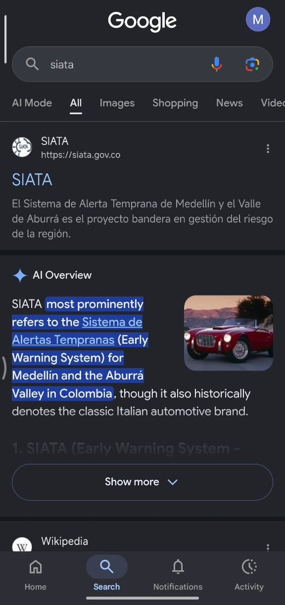
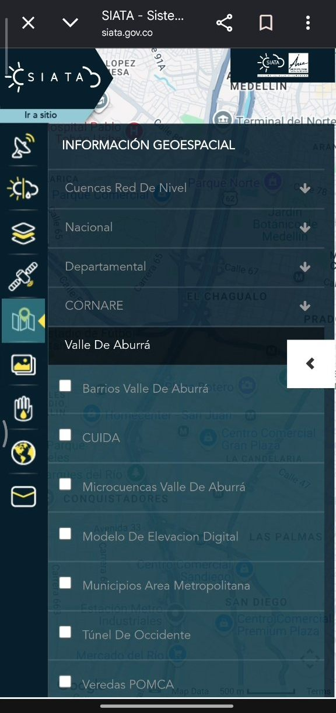
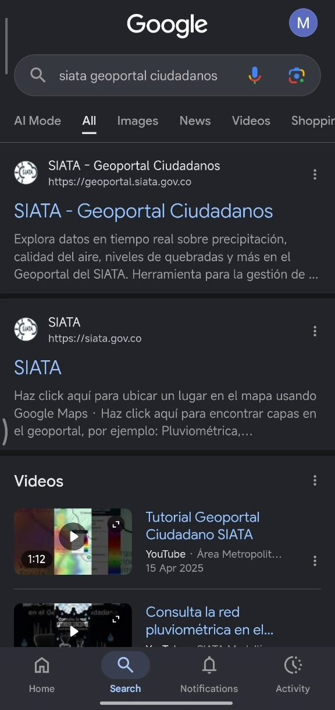
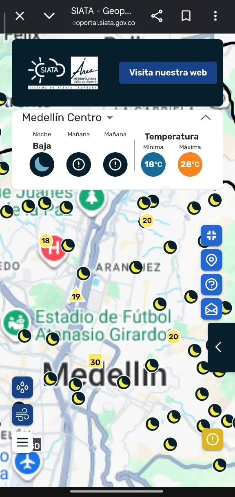

SIATA Geoportal Ciudadanos
- My role
- Team of 5. I did the user interviews and testing, built the working prototype with generative AI and wrote the analytics report
- Tools
- Figma, Gemini Canvas (HTML prototype), Optimal Workshop, Maze, Hotjar
- Timeframe
- March – May 2026
- Context
SIATA is Medellín's early-warning system. It runs a technical website and a separate citizen portal.
- Challenge
Searching "siata" leads to the technical site, and the citizen portal is still crowded on a phone. How can someone check rain and risk without knowing meteorology?
- Solution
A map-first mobile web prototype with less on screen, sliding panels, everyday words and two route tools.
- Result
36 recorded sessions and 981 clicks, gathered on the entry button and map controls. Maze could not score success, and I reported that as a limit.
- Learning
Keep the first version small, and say what the data can't show.
The problem
SIATA has two websites, and people reach the wrong one. The first, siata.gov.co, is the technical one, aimed at people who already understand meteorology. It is what comes up when you search for SIATA.
The second, Geoportal Ciudadanos, is meant for ordinary people and should be friendlier, but it is much less recognised. That is our own observation as a team. In our interviews some people had never heard of SIATA, and several preferred Apple Weather or Google.
The course brief asked us to redesign a public website or app with a Lean UX process. Our question: how can someone check the weather and risks, like rain or overflowing streams, without understanding meteorology?
Where we started
The live sites on a phone, recorded in October 2026, so small details may differ from what we saw in March.

Searching "siata" puts the technical site first. 
The technical site: a long stack of layers and checkboxes. 
The citizen portal appears when you already know its full name. 
The citizen portal: a map crowded with icons, tools as small buttons.
My role
Researcher and prototype builder in a team of five.
- Ran and recorded the user interviews, and shared the test links.
- Helped build the Figma baseline prototype.
- Built the final working prototype as HTML in Gemini Canvas, a generative AI tool, from our Figma baseline and the group's decisions.
- In the weekly meetings, helped decide which functions to change.
- Rewrote SIATA's technical terms in plain language and made the vector assets that explain the interface and buttons.
- Wrote an individual analytics report on how people used the prototype. I used AI to help bring our documents and test findings together in it.
Process
-
Frame the assumptions
A Lean UX Canvas (Jeff Gothelf) set out the problem, two proto-personas (aged 17–28 and 29–50) and the riskiest assumptions. Could people understand the terms and icons? Which alerts mattered? Would a widget help?
-
Interviews · 27 March 2026
Six EAFIT students from different degrees. Most only check the weather to make a practical decision, like taking an umbrella. Most used Apple Weather or Google because SIATA felt complex and technical.
"Debe ser simple y que me muestre solo si va a llover."An interviewed student ("It should be simple and just show me if it's going to rain")
-
Walkthroughs and tree test
People went straight for the most visual elements: the cloud, the location pin, the rain layer. They hesitated over technical category names and sometimes didn't see cards as buttons. The labels needed everyday language.
-
Collaborative prototyping
We gave two participants our first structure and asked them to rearrange it. Both asked for fewer categories and a simpler layout, with alerts and the main weather data easier to reach.
-
Build and evaluate · May 2026
I rebuilt the prototype as a working mobile web app: a splash screen with an "Explorar" button, then a live map with switchable layers for rain, air quality and river levels, and two tools. Clima origen–destino checks the weather along your route, and Mejor hora para salir suggests the best time to leave. Friends and acquaintances of the team tested it without a moderator, and their recorded paths gave each of us the same data for our own report.
Decisions and obstacles
-
Decision
Keep the first version small
In a session with our teacher we saw that I was building every section we wanted to change in Gemini Canvas. That was not a minimum viable product. With the teacher's direction we built only what was needed to test our main hypotheses.
-
Decision
Show less on screen
We argued interface choices from our own experience, then checked them against the concepts behind them. Cutting what is visible reduces cognitive overload, and sliding panels hold only specific, useful information.
-
Decision
Use everyday words
Precipitación became lluvia, even where people may know the term, to remove even small doubts.
-
Obstacle
Testing without a moderator
People did the tasks alone from a link. That showed freer behaviour, but we couldn't confirm everyone understood the instructions, and it caused the tracking limits below.
Solution
A map-first citizen portal that answers one question quickly: is it going to rain where I'm going, and what should I do about it?
Technical variables are still there as optional map layers but no longer lead the page. Labels are in everyday Spanish. The two route-based tools turn weather data into a decision about when and how to travel.
Result & reflection
- 36recorded sessions (18 phone, 18 computer)
- 981clicks, none of them rage clicks
- 4:52average session
- 38.9%bounce rate: some left quickly
People found the entry point and treated the map as the heart of the experience. Clicks clustered on the Explorar button (18 sessions) and the map controls. Consultar ruta (17 sessions) and Mejor hora para salir (16) were among the most-used features.
Not everything worked, and I reported that too. The sample was small and close to the team. Maze showed 0% mission success, but not because everyone failed: the paths were never reviewed and categorised by hand, so the tool couldn't score them.
The limits and what I recommended
Maze recorded 13 responses and I counted 12 as valid, because one had no complete recording. Hotjar also couldn't track parts of the prototype that were embedded as iframes. I recorded both as limitations instead of treating the numbers as final.
My recommendations: clearer active and inactive states for the layer buttons, short helper text, less visual load when many layers are on, and a re-test with light moderation.
What I took from this: build the smallest thing that tests the idea, and be honest about what the data can't show, because that is part of doing UX research properly.